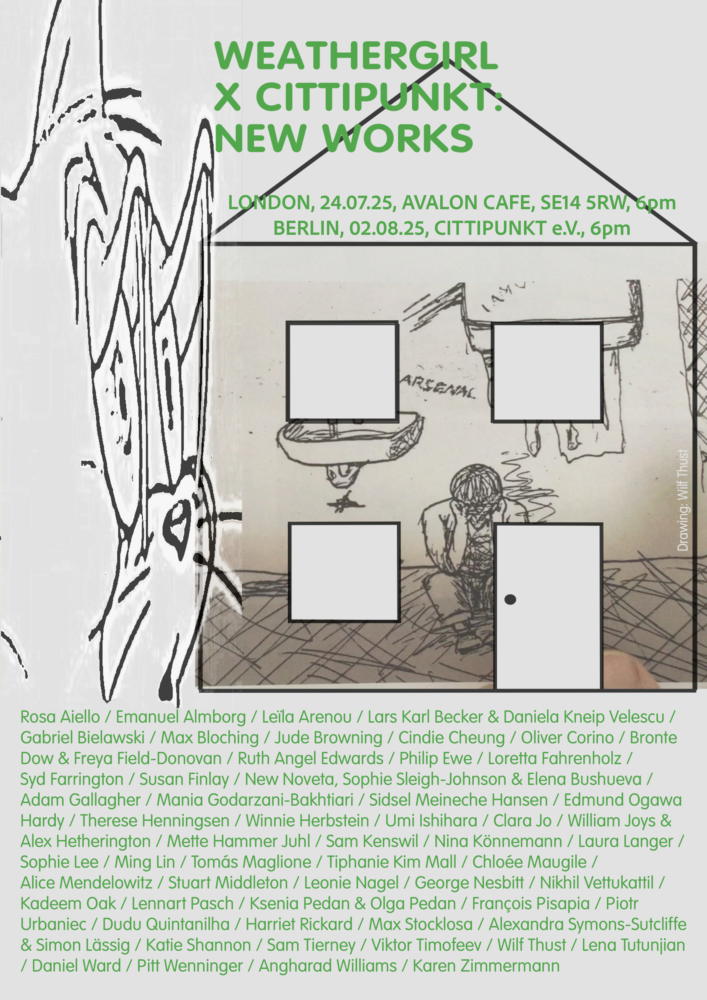

Dear friends,
We are excited to invite you to the third edition of the new works screenings. For this event Cittipunkt (Berlin) has teamed up with Weathergirl (London) to present an XL PROGRAMME OF NEW VIDEO WORK.
The new works screening series has been running in Berlin since 2022 (last event here). Each year artists are invited to produce a new work in a short space of time made specifically for the screening. The programme is an opportunity for tests, sketches, the resuscitation of lost projects, the bringing to light of unused footage, holiday pics, lo-fi ideas, speculative gestures and exorcisms.
As a co-curation with Weathergirl, this edition features works by an extended community of artists, writers and filmmakers. This longer programme will be screened twice, in London and Berlin. Details below:
The LONDON screening will take place at Avalon Cafe on Thursday 24 July starting at 6pm.
Avalon Cafe, Juno Wy., London, UK, SE14 5RZ
The BERLIN screening will take place at Cittipunkt in Berlin on Saturday 2nd August starting at 6pm.
Cittipunkt, Brüsseler Str. 36A, 13353 Berlin, Germany
At each location, the programme will be broken up into a series of shorter screenings with breaks. The running orders will be made available in advance.
Participating artists include:
Rosa Aiello / Emanuel Almborg / Leïla Arenou / Lars Karl Becker & Daniela Kneip Velescu / Gabriel Bielawski / Max Bloching / Jude Browning / Cindie Cheung / Oliver Corino / Bronte Dow & Freya Field-Donovan / Ruth Angel Edwards / Philip Ewe / Loretta Fahrenholz / Syd Farrington / Susan Finlay / New Noveta, Sophie Sleigh-Johnson & Elena Bushueva / Adam Gallagher / Mania Godarzani-Bakhtiari / Sidsel Meineche Hansen / Edmund Hardy / Therese Henningsen / Winnie Herbstein / Umi Ishihara / Clara Jo / William Joys / Mette Juhl / Sam Kenswil / Nina Könnemann / Laura Langer / Sophie Lee / Ming Lin / Tomás Maglione / Tiphanie Mall / Chloée Maugile / Alice Mendelowitz / Stuart Middleton / Leonie Nagel / George Nesbitt / Nikhil Vettukattil / Kadeem Oak / Lennart Pasch / Ksenia Pedan & Olga Pedan / François Pisapia / Piotr Urbaniec / Dudu Quintanilha / Harriet Rickard / Max Stocklosa / Alexandra Symons-Sutcliffe & Simon Lässig / Katie Shannon / Sam Tierney / Viktor Timofeev / Wilf Thust / Lena Tutunjian / Dan Ward / Pitt Wenninger / Angharad Williams / Karen Zimmermann
The event is free, drinks available at the bar in both London and Berlin.
Thank you to the artists.
SEE YOU THERE.
Bronte, Freya, Pitt & Sophie